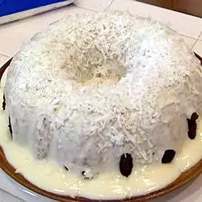

Cake

Cake
Ingredients
- 1 ½ cups butter
- 2 cups white sugar
- 4 eggs
- ½ teaspoon salt
- 2 teaspoons baking soda
- 1 (20 ounce) can crushed pineapple, drained
- ¼ cup unsweetened pineapple juice
- 1 (3.5 ounce) package flaked coconut
- 1 cup chopped walnuts
- 2 teaspoons vanilla extract
- 1 (16 ounce) package graham crackers, crushed
Steps
- Preheat oven to 350 degrees F (175 degrees C). Grease and line with parchment paper one 10 inch tube pan.
- Cream butter or margarine, sugar, and eggs together; add salt, baking soda, crushed pineapple, and pineapple juice. Add coconut, walnuts, and vanilla. Mix in the graham cracker crumbs. Pour batter into the prepared pan.
- Bake at 350 degrees F (175 degrees C) for 1 hour and 30 minutes.